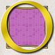
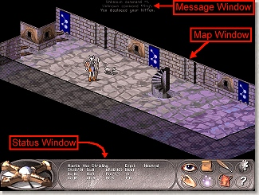
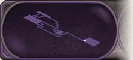
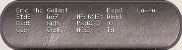
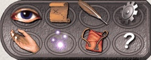
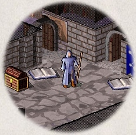

3. What do all those things on the screen mean?
n the screen is
kept a map of where you have been and what you have seen
on the current dungeon level; as you explore more of the level, it appears
on the screen in front of you.
When NetHack's ancestor Rogue first appeared,
its screen orientation was almost unique
among computer fantasy games. Since then, screen orientation
has become the norm rather than the exception;
NetHack continues this fine tradition. Unlike text adventure
games that accept commands in pseudo-English sentences and explain
the results in words, NetHack commands are all one or two keystrokes or mouse clicks, and
the results are displayed graphically on the screen.
NetHack can even be played by blind players, with the assistance
of Braille readers or speech synthesisers. Instructions
for configuring NetHack for the blind are included in the original NetHack
Guidebook.
NetHack generates a new dungeon every time you play it; even the
Guidebook authors still find it an entertaining and
exciting game despite having won several times.
NetHack offers a variety of display options. The
options available to you will vary from port to port,
depending on the capabilities of your hardware and software, and
whether various compile-time options were enabled when your executable
was created. Possible display options are:
- a monochrome character interface
- a color character interface
- a graphical interface using small overhead pictures called tiles
- a graphics-intensive interface (called Vulture's Eye) using isometric tiles
There is no difference between the various display options with respect
to game play. To find out more about the first three interfaces, see the original
NetHack Guidebook.

In order to understand what is going on in NetHack,
first you must understand what NetHack is doing with the screen.
The NetHack screen replaces the ``You see ...'' descriptions of text
adventure games. Above is a sample of what a NetHack
screen might look like with Vulture's Eye.
The screen is divided into three main areas: the status window, the
message window and the main view. The precise layout of the windows depends
on the screen mode you are using.
3.1. The status window (bottom)
The bottom of the screen has three areas: a mini-map, a status display and a button panel.

The mini-map shows an overview of the surrounding dungeon layout.
Dark areas are unexplored or impassable; light areas are rooms or corridors.
Your character is shown as a white dot.
Left-click a spot on the mini-map to move there. Right-click a spot to
center the main view there.

The status display contains several cryptic pieces of information
describing your current status. If the status information becomes
too long for the display, you might not see all of it.
Here are explanations of the various status items
(though your configuration may not have all of them):
- Rank
- Your character's name and professional ranking (based on the experience
level, see below).
- Strength
- A measure of your character's strength; one of
your six basic attributes. Your attributes
can range from 3 to 18 inclusive (occasionally you may get super-strengths
of the form 18/xx). The higher your
strength, the stronger you are. Strength affects how successfully
you perform physical tasks, how much damage you do in combat,
and how much loot you can carry.
- Dexterity
- Dexterity affects your chances to hit in combat, to avoid
traps, and do other tasks requiring agility or manipulation of objects.
- Constitution
- Constitution affects your ability to recover from injuries
and other strains on your stamina.
- Intelligence
- Intelligence affects your ability to cast spells and
read spellbooks.
- Wisdom
- Wisdom comes from your practical experience (especially when dealing with
magic). It affects your magical energy.
- Charisma
- Charisma affects how certain creatures react toward you. In particular,
it can affect the prices shopkeepers offer you.
- Alignment
- Lawful, Neutral, or Chaotic. Often, Lawful is taken as good and
Chaotic as evil, but legal and ethical do not always
coincide. Your alignment influences how other
monsters react toward you. Monsters of a
like alignment are more likely to be non-aggressive, while
those of an opposing alignment are more likely
to be seriously offended at your presence.
- Dungeon Level
- How deep you are in the dungeon. You start at level one and the
number increases as you go deeper into the dungeon.
Some levels are special, and are identified by a name
and not a number. The Amulet of Yendor is reputed to
be somewhere beneath the twentieth level.
- Gold
- The number of gold pieces you are openly carrying.
Gold which you have concealed in containers is not counted.
- Hit Points
- Your current and maximum hit points. Hit points
indicate how much damage you can take before you die.
The more you get hit in a fight, the lower they get. You can regain
hit points by resting, or by using certain
magical items or spells. The number in parentheses is
the maximum number your hit points can reach.
- Power
- Spell points. This tells you how much mystic energy (mana)
you have available for spell casting. Again, resting
will regenerate the amount available.
- Armor Class
- A measure of how effectively your armor stops blows from unfriendly
creatures. The lower this number is, the more effective the armor;
it is quite possible to have negative armor class.
- Experience
- Your current experience level and experience points. As you adventure,
you gain experience points. At certain experience point totals,
you gain an experience level. The more experienced you
are, the better you fight and withstand magical attacks. Many dungeons
show only your experience level here.
- Time
- The number of turns elapsed so far, displayed if you
have the time option set.
- Hunger status
- Your current hunger status, ranging from Satiated down
to Fainting. If your hunger status
is normal, it is not displayed.
Additional status flags may appear after the hunger status: Conf
when you're confused, FoodPois or Ill when sick, Blind
when you can't see, Stun when stunned, and Hallu when hallucinating.

The button panel has eight command buttons that
provide more game information. Clockwise from top left, they are:
- Look button (eye)
- Click this to examine your surroundings. The cursor changes to a question mark;
click anywhere on the main view to get a detailed description. When you're done, click
the button again or press the spacebar.
- Automap (parchment)
- Click this to get a top-down view of the entire dungeon level. Creatures are shown
as green dots, objects as yellow and traps as red. Click anywhere to dismiss the automap.
- Message log (quill)
- Click this to see the last 50 messages (newest first). A text window will appear;
use the scrollbar to browse through the messages. Click "Continue" when you're done.
- Game options (cogwheel)
- Click this to set some in-game options. Select the option(s) you want to change and click
"Continue".
-
- Help (question mark)
- Click this to read the online help texts available in NetHack.
-
- Inventory (bag)
- Click this to view your current equipment.
-
- Spells (sparkles)
- Click this to view what spells your character knows (if any).
-
- Extended commands (hand)
- Click this to get a list of extended commands;
some of the more complex or infrequent actions in NetHack are listed here.
Just choose a command and click "Continue" to perform it.
-
3.2. The message window (top)
You displaced
your kitten.
The door resists!
The door opens.
The goblin hits! |
The top of the screen is reserved for messages
that describe things that are impossible to represent
visually. In Vulture's Eye, messages are shaded according to their age (old
messages are darker). Only the newest messages are shown; to view older ones,
open the message log from the button panel.
3.3. The map (rest of the screen)
|  |
The rest of the screen is the main view; it shows the
dungeon level as you have explored it so far. In Vulture's Eye,
you usually can't see the entire dungeon level at once;
click the mouse on the edges of the main view to scroll.
Each tile on the screen represents something. Move the mouse cursor
over an object or monster to see a quick description. |
Previous: What is going on here?
Next: Commands